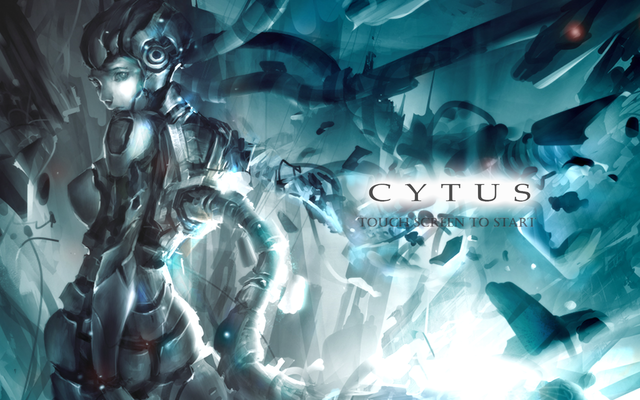
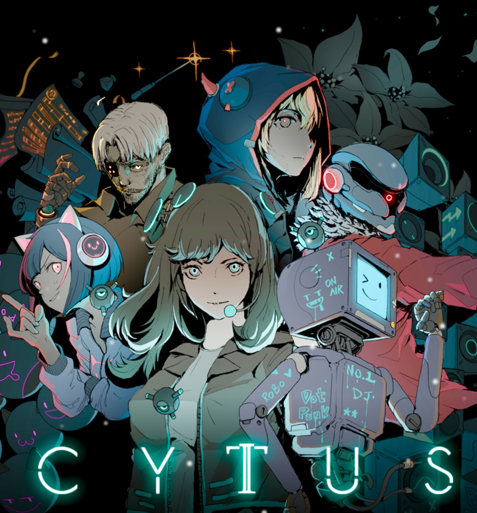
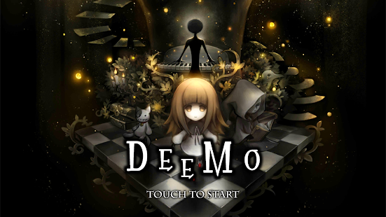
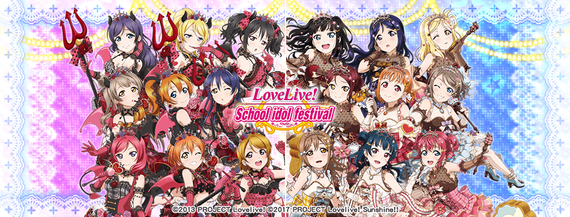

Mobile Rhythm Games
Cytus:

Gameplay: 9/10
Cytus has a lot of challenging gameplay, a variety of notes, and plenty of levels to cater to your current ability.
Cytus uses the whole screen to play similar to the more popular Osu! A bar bounces up and down the screen, and you tap the notes as the bar passes over them. It has simple tap notes, drag notes, and hold notes.
Levels range from 1 to 9, and each song has a easy level, typically in the 1 to 5 range, and a hard level, typically in the 5 to 9 range.
I rated the gameplay a near perfect for it's variety of notes and beatmaps that are generally excellent. There are some things to note about the gameplay:
Possibly, a frustration for many Cytus players, which is not at all the game's fault, is that players' hands will occasionally block certain parts of the screen from view,
if they do not move fast enough. In addition, Cytus will occasionally give you three notes on the screen at once, so don't expect that you can play this game with one hand.
Max score is S--1000000. The song also tracks your detailed accuracy which shows up as TP.
Visuals: 8/10
I didn't notice this about Cytus before I played Cytus II, but the gameplay is very fuzzy. When you hit a note, it will explode into fuzzy light.
This isn't particularly bothersome in easier levels, but the more clustered the screen becomes, the more noise there is on the screen.
Another thing that creates noise on the screen and is annoying in the earlier stages of playing the game is that your combo
will flash across the whole screen every 25 notes. This is very distracting to beginners. You'll learn to ignore the noise eventually.
On the other hand, the reason the visuals were rated 8/10 despite the noise during gameplay is the title art. The title art is brilliant as is with most
Rayark games.
Audio: 10/10
Audio is a 10 out of 10, what is there to say. Most Rayark games have gorgeous soundtracks, and Cytus is no exception.
No matter what genre of music you like, you'll probably find something you like in the plethora of songs.
Except kpop, if you want that, you'll have to go to Superstar BTS.
Content: 11/10
This'll probably be the only time that I'll give a 11/10, but there are SO much content in this game. For $1.99 there are way over 100 songs available,
and that's not even including the 20+ hidden songs. And remember, each song has two different beatmaps: easy and hard, so in reality, there're about
300 levels of gameplay. If that's not enough, it is possible to purchase more levels. My favorite purchasable level is Chapter L
which is a whopping $9.99, but don't be scared. The chapter adds 10 songs which is 20 levels with a hidden beatmap for each song.
That's 40 more levels. And the songs are top notch, being performed by an orchestra. Anyway, Cytus does not disappoint at all with the amount content it offers.
Official Cytus Website
Cytus II:

Gameplay: 9.5/10
Cytus had a good variety of gameplay, so I expected Cytus II to have the same. I got more than I expected.
The classic tap, drag, and hold notes still exist, but there's more--drag notes that extend over the ends of the screen, swipe notes, and
the dreaded tempo change. All the aspects make the game much more difficult that before, and the beginning bar definitely feels higher, but
it's not that much of a high bar--tempo changes and swipe notes only come out in the higher levels. Other than that, the gameplay is nearly
identical to Cytus. One thing to note, unlike Cytus, there are three levels of difficulty easy, hard, and chaos with levels ranging from 1-10.
Visuals: 9/10
Coming to Cytus II from Cytus, there's one thing I noticed: clean. The gameplay looks very clean, and unlike Cytus, the notes
didn't explode into fuzziness. The notes are also smaller and combos only come up on screen every 50 combos. Overall, much
less noise on the screen which is great. The song title screens were less pleasing in my opinion. Unlike Cytus, there are
characters associated to a group of songs, and you can see them on the border. This is cool, but I think it also gives
less of an oppurtunity for the game to showcase its art. The art in Cytus and Deemo also look more appealing, in my opinion.
Audio: 9.5/10
Cytus II is also like other rayark games as in that it does not disappoint.
There are six different characters in the game that “produce” different types of songs.
For example, the character RoboHead has a lot of dubstep. Every song is very nice to listen to with 30 songs with the initial purchase.
Content: 7/10
Not to sound entitled, but after playing Cytus, I expected more content from Cytus II, but as opposed to Cytus' 300 levels, Cytus II features about 90 levels,
which felt like a massive downgrade in the amount of gameplay available. Cytus II also has a story in the background that you unlock as you progress in the game.
However, the whole story is available if you unlock the three characters out of six which costs money, $9.99 each.
As a person used to Cytus generosity, Cytus IIs amount of content is underwhelming.
Official Cytus II Website
Muse Dash:

Gameplay: 7.5/10
Muse Dash has smooth animations and responds pretty nicely to touch. It also has a pretty straight forward method of playing.
However, it feels very lacking in the variety it features. The general game play looks like this: enemies will either come from the ground or the air
and you hit them as they come over your hit zone. Occasionally, there are hidden enemies and bosses as well.
Having only two different hit zones is too simplistic for me which made the gameplay rating go down.
Does that necessarily mean the game is significantly easier than the others? No. It's worth noting that this game sometimes gives you combinations that are nigh impossible
if you're not spamming as fast as you can, but a part of me wants to tap more than two parts of the screen.
Visuals: 9.5/10
Not quite as pleasing as Cytus or Deemo's art, but Muse Dash has a fair share of good visuals. The animations in game are smooth,
and the art for the title screen is good. Muse Dash has very cute visuals with a lot of vibrant colors.
In addition, there are different characters you can unlock, each with their own character design and abilities.
There are also cute supports called elven which come in a wide variety. There is also not too much noise on the screen at any given time which is pleasing.
Audio: 8.5/10
Currently, as Muse Dash is still a game in progress, there are 30 available songs with each their own audio.
There are less variations in genre than Cytus or Cytus II, but there are still some fun songs featured in the game.
Also, every time you hit an enemy, there is a satisfying whack as they fly off screen.
Content: 9/10
As mentioned before, Muse Dash has 30 songs. Each song has 3 difficulties which means there are currently 90 beatmaps in the game.
But, you say, that's the same as Cytus II. Firstly, the game is still a work in progress which means future levels will come out,
and secondly, it does not troll you by encouraging you to buy more levels to progress a story. As of now, Muse Dash has a reasonable amount of content.
Deemo:

Gameplay: 9/10
Deemo has a deceptively simple gameplay style. As lines fly toward you, you have to tap the line as it crosses over the baseline.
It has tap notes and drag notes. Simple, right? Wrong, most people soon find out that this game is the opposite of a bullet hell--
you have to hit all of the bullets. Sometimes, the lines bunch up so that you can't see the notes you're supposed to hit, and others,
the lines fly at you at lightning speed. Deemo also has the brutal system of gauging you on how perfect you hit the lines. In other words, it doesn't matter it you hit the note,
if you don't hit it perfectly, you won't get 100.00%. But difficulty, of course is not the reason Deemo loses points on gameplay. Much like Cytus,
the lines explode into fuzzy light when they are hit. When all of the lines are bunched up together in one place, this is very annoying.
Visuals: 10/10
Other than problems with the game play visual, there is absolutely no problem with Deemo's art. Deemo's song cover arts are all very gorgeous and aesthetically pleasing.
Some are cute, and some are cool, there will always be at least one cover that will please you. In the story mode of the game, there are also animations which are also very pretty.
Audio: 10/10
Again, a Rayark game so the audio is exquisite. Deemo especially focuses on the piano which I am an utter sucker for. In addition, there are quite the variety of songs,
so it isn't boring to listen to at all.
Content: 9/10
Like Cytus II, Deemo goads players into buying expansions which are over half the game. This doesn't interfere with the story's completion(which is quite a beautiful story),
so it is less annoying than what Cytus II presents. It still has more songs and levels than Cytus II as well.
Even if the songs are limited, there are still plenty to choose from as they are all great.
Official Deemo Website
Love Live! School Idol Festival

Gameplay: 9/10
LLSIF is formatted as nine circles arranged in a semi-circle. Notes fly at these circles from the center of the screen in the form of tap notes,
hold notes, and the recently added drag notes. Gameplay is very customizable, allowing players to control popups, fonts, and sounds.
Levels range from 1 star to 12 stars. What LLSIF falters at, in my opinion, is the scoring system. The amount of score heavily relies on which cards you have on your team.
As this is a gacha game, this means that LLSIF encourages player to buy currency and get better cards. Though there is a no-pay way to acquire these cards, it is much more time-consuming.
Visuals: 10/10
LLSIF is a gacha game, so obviously their cards have to be pleasing to encourage players to want the cards, but the detail that does into the cards is amazing.
Among the gacha rhythm games, it probably has one of the best, if not the best, art in the industry.
The UR cards, which are the rarest cards, are always on point with their art and never fails to catch your eye.
Audio: 7/10
There are a lot of songs you can choose from, but they are, for the most part pretty generic. They are all catchy, fun songs that'll get stuck in your head,
but also sometimes you begin to blur the songs together because they sound generic. These types of songs are probably favorites for some people, but my standards have been elevated by Deemo and Cytus.
It is also worth noting that I don't have a major liking toward Jpop.
Content: 11/10
Trust me when I say this--there is always more content. The team that works on this piece works on it as the game goes which means feedback is always considered.
Is the game getting too easy for you? Then you can try the new master levels or that AC level that forces your fingers to go at speeds you never thought you could achieve.
New cards are constantly coming out, events are constantly taking place, and new songs are constantly being produced. You never get bored with this.
In fact, it's more likely that you'll get overwhelmed by the game than quit because you can't find anything else to do.
Official Love Live! Website
Superstar BTS
Gameplay: 6.5/10
Yucky. You thought Deemo and Cytus' fuzziness was annoying; this game makes it seem like there's a geyser of light distracting you everytime you hit a note.
The game plays a lot like Deemo with circles flying at lines. You get tap, drag, and hold notes. The drag notes are the most annoying as the indicator that you are on a certain line suddenly jumps a column as you follow a drag note.
It makes you think you missed it when in reality, nothing's wrong, that's just how the game's made. This game also records how perfect you are(though you'll have to go searching if you want to know) and like LLSIF, is reminiscent of a gacha game.
It doesn't feel like a gacha game, however. The ranking system is a big part of the game which is okay, but the problem is that the game doesn't incentivize playing harder songs regularly.
It's better to play easier songs because you'll probably earn more point on them. Also. the game is a major pay to win which is to be expected in a lot of gacha games, but this one moreso.
Visuals: 9/10
Other than the geyser of light and the drag notes, there isn't much else to pick out in the gameplay. The game is reminiscent of a gacha game, as it lets you pull random cards,
but it doesn't have costumes or card types as most gacha games have. The cards drawn are pictures of members of BTS, which is plus.
There are a lot of different cards so there are that many more varieties to choose from.
Audio: 10/10
I'm a sucker for Kpop so that earns this big points. The one thing that grates on my nerves is the song in the menu, but then again, every games' menu song grates on my nerves.
One thing I wish would be available is the full versions of songs. In most levels, the level cuts out halfway through the which is a bit annoying.
Content: 10/10
So far, you don't have to buy levels. All levels are unlockable by playing some other song. It's not like BTS can magically make more songs so it's not like I can complain that there aren't that many songs to choose from which is a lie because there are quite a lot of levels in the game.
Each song has 3 levels, but usually everyone plays easy because it's easiest to get point from. The team is constantly adding new songs to the game, so we can only expect this game to expand in the future.
Official Superstar BTS Website